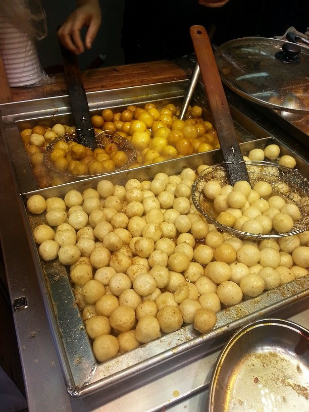
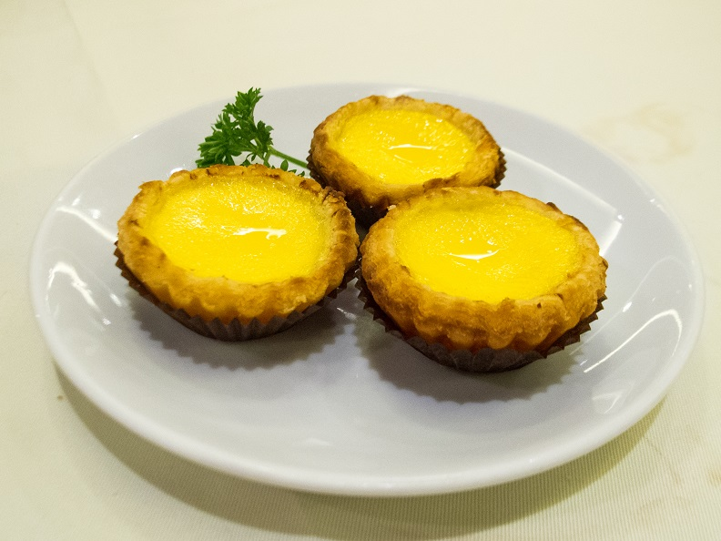

-
Fishball
Fish balls are rounded meat balls made from fish paste which are then boiled or deep fried. Similar in composition to fishcake, fish balls are often made from fish mince or surimi, salt, and a culinary binder such as tapioca flour, corn, or potato starch.
Fish balls are popular in East and Southeast Asia, where it is eaten as a snack or added to soups or hotpot dishes. They are usually attributed to Chinese cuisine and the fish ball industry is largely operated by people of Chinese descent. European versions tend to be less processed, sometimes using milk or potatoes for binding. Nordic countries also have their own variation.
-
Egg tart
The egg tart is a kind of custard tart found in Chinese cuisine derived from the English custard tart and Portuguese pastel de nata. The dish consists of an outer pastry crust filled with egg custard. Egg tarts are often served at dim sum restaurants and cha chaan tengs.